Index of Topics
- - A -
- Adding a Module File
Auto-arranging of Graph Views
Automatically Saving Options on Exit
- B -
- Browser Files
The Browser Menu Bar
- C -
- Changing the Graph Orientation
The Class Inheritance View
Collapsing Nodes
Configuring the Browser
Creating a Browser Database File from the Command Line
Creating a Browser Database File within the Browser
- D -
- Defining Graph View Legends
Disabling a Module File
- E -
- Enabling a Module File
Enumerator Styles
Expanding Nodes
- F -
- Find
Find Filters
Find Pattern
Find Selected
The Function Call Tree View
- G -
- Global Symbol Queries
Global Views
Goto Definition
- L -
- Line Drawing Method for Graph Views
The List View
Loading Options
Locating Symbols
- M -
- Manipulating the Tree Views
Member Filters for Classes
- O -
- The Open Watcom Browser
Opening an Existing Browser Database File
- P -
- Performing the Find
- Q -
- Query Filters
Query Pattern
Quitting the Browser
- R -
- Regular Expressions for Find and Query
Removing a Module File
- S -
- Saving Options
Selecting a Text Editor
Selecting Root Nodes
Setting Source Search Paths
Source References
Starting the Browser
Symbol References
- U -
- Using the Browser
- V -
- Viewing Detail Information
- W -
- Working with Browser Module Files
The Open Watcom Browser
Imagine being assigned to a project with thousands of lines of C++ source code. Learning the relationship between
the objects of such an application can be very difficult. The Browser was developed to solve this very problem - to
help developers better understand the source code they are working with. Information such as the class inheritance
hierarchy and the call tree for an application can be studied while using the Browser. Once you have located a symbol,
you can quickly view the source file that contains its definition or list all the files that reference it. Viewing
these relationships helps you understand how the program works.
This chapter describes the many tasks you can perform with the Browser, including creating and opening a Browser database
file, configuring the Browser session, and viewing the list of all symbols in your program, the class inheritance hierarchy,
and call structure.
Using the Browser
This section discusses the following topics:
- Starting the Browser
- Starting the Browser through the Open Watcom Integrated Development Environment
- Quitting the Browser
- The Browser Menu Bar
Starting the Browser
To start the Browser, double click on the Browser icon. This opens the Browser window. The caption bar of
this window displays the current option file and Browser database file. The message no browser file appears
on this line if a database file is not currently selected.
The Browser is an integrated tool that you can open from the IDE so that you can browse the source code of the project
you are working on. Refer to the IDE guide for further information on the Integrated Development Environment.
Quitting the Browser
To exit the Browser, choose Exit from the File menu of the Browser window. If you made changes to
the options during the Browser session, a message box appears prompting you to save the changes.
Choose No in the message box to close the Browser session without saving. Any options changed within
the session are lost.
Choose Yes in the message box to save the current options to the current option file, if one exists, and exit
the Browser session. If no option file exists, a Save As dialog appears that allows you to specify the option
file to which you want to save the new options.
-
- Select Cancel to return to the main Browser window without saving the options.
or
- Select OK to close the dialog and exit the Browser session.
The Browser's menu bar consists of the following eight menus:
- File
- Create, open, and configure Browser files; save and load options
View
- Choose a global view for the current database file
Detail
- View detailed information for a symbol
Tree
- Choose the nodes to display for a tree view
Locate
- Find symbols within the current global view
Options
- Configure the Browser session
Windows
- Select from the list of Browser windows currently open
Help
- Access on-line help information
Browser Files
To browse your source code, you must first create a Browser module file for each source file that you wish to browse.
Currently, browsing is supported by the Open Watcom C/C++ compilers only (Open Watcom FORTRAN 77 does not support browsing).
To create a Browser module file, specify the "db" option when you compile the source file. If you are
using the Open Watcom Integrated Development Environment, select Emit Browser Information from the Debugging Switches
panel of the Compiler Switches dialog. The Browser module file will have the same name as the source file and
an extension of ".MBR".
Once the Browser module files have been created, these files are merged and a Browser database file is created.
This process eliminates redundant information such as duplicate definitions that occur when a header file is included by
many source files. Browser database files have the extension ".DBR".
The Browser allows you to configure your session and saves this configuration to an options file. Options files
have the extension ".OBR". The file name setup.obr is the default name of the options file.
The default options file is automatically loaded by the Browser when the Browser is started.
Creating a Browser Database File within the Browser
- (1)
- Choose New from the File menu.
This opens the New Browser File dialog where you enter the name of the Browser database file you are creating.
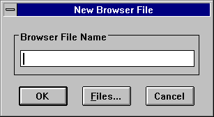
Figure 1. Use the New Browser File dialog to create a new Browser database file.
(2)
- Type the name and path of the new Browser database file.
or
- Click on the Files button to open a second dialog that allows you to browse the directory structure for an
existing Browser database file. Select an existing file and change its name. If you do not change its name, a
message box appears when you press OK asking if you want to overwrite the existing file.
(3)
- Click on OK.
This opens a Module window that will eventually contain a list of the module files that will make up the database
file.
(4)
- Click on the Add button in the Module window.
This opens the Select Module File(s) dialog where you choose the module files to add to the database file.
(5)
- Select the module files to add to the database file and click on OK.
or
- Double click on the desired module file.
This closes the Select Module File(s) dialog and adds the selected module file to the Browser file component list.
Each module file on the components list has a check box. When added, this check box is marked with an X, indicating
that the module file is enabled.
(6)
- Continue with steps 4 and 5 until you have added all desired module files to the component list.
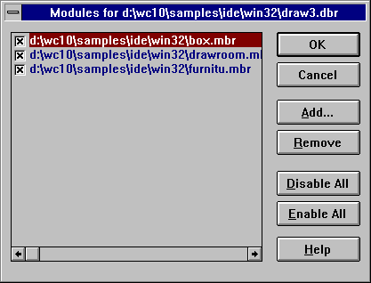
Figure 2. The Modules dialog displays the selected module files.
(7)
- Click on OK on the Module window.
This closes the Module window and creates the database file.
Creating a Browser Database File from the Command Line
It is also possible to create the Browser database file from the command line. This allows you to make Browser database
file creation part of your standard build procedure. When you do this, the batch build procedure will automatically
update your database file. Updating the Browser database file occurs only if changes have been made to a module file
within the database file.
A separate utility, called the merger, is used to create the database file. The name of the merger program is
wbrg.exe. Its command line consists of the name of the database file and a list of the module files (.MBR files)
to be merged. The name of the database file must be preceded by a database command. The default extension
given to the database file is ".DBR". The list of module files must be preceded by a file command.
The module file names must be separated by commas or enclosed by curly braces and separated by spaces. The list
of module file names can contain wild cards. The following are examples of valid merger commands. In each case,
the module files m1.mbr and m2.mbr will be processed and the database file db.dbr will be created.
wbrg database db file m1, m2
wbrg database db file { m1 m2 }
wbrg file m1, m2 database db
wbrg file { m1 m2 } database db
It is also possible to specify a command file that contains merger commands. Command files have the extension
".CBR". Consider a command file, called merge.cbr, containing the following merger commands.
database db
file m1
file m2
The following example will achieve the same results as the previous example.
wbrg @merge
If you want to suppress the listing of file names that the merger produces as it is working, you can include the "quiet"
option on the command line or in the command file.
Opening an Existing Browser Database File
- (1)
- Choose Open from the File menu.
This opens the Open Browser Database File dialog where you select the database file you want to open.
(2)
- Select a database file to open and click on OK.
or
- Double click on the desired database file.
This closes the Open Browser Database File dialog.
- Note:
- You can have only one database file open at a time. If you open a second database file, the Browser discards the first
and displays information for the second.
Working with Browser Module Files
Once a Browser database file is loaded, you might want to edit the list of modules originally used to create the database
file. Editing the list of modules allows you to temporarily remove modules from the database or add modules to the
database. For example, you may decide that you only want to browse a particular module or set of modules or you may
have forgotten a module when the database was originally created.
The Modules menu item in the File menu allows you to view the list of module files that make up the
current database file. From this list you can perform the following functions on the module files:
- Add
- Remove
- Disable
- Enable
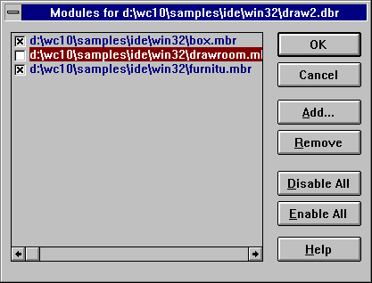
Figure 3. On the Modules dialog, you can add, remove, disable, and enable module files.
Adding a Module File
- (1)
- Choose Modules from the File menu.
This opens the Modules dialog for the current database file. This dialog lists all module files that make
up the database file. Each module file has a check box. An X in this box indicates that the module file is enabled.
The Browser browses only the enabled module files.
(2)
- Click on the Add button in the Modules dialog.
This opens the Select Module File(s) dialog where you choose the module files to add to the current Browser file.
(3)
- Select the module files to add to the Browser file and click on OK. Select multiple module files by holding
the Shift key while you click on the desired files.
Clicking on OK closes the Select Module File(s) dialog and adds the selected module file to the database file.
Each module file in the module list has a check box. When added, this check box is marked with an X, indicating
that the module file is enabled.
(4)
- Continue with steps 2 and 3 until you have added all desired module files to the component list.
(5)
- Click on OK in the Module dialog.
This closes the Modules dialog and updates the database file.
Removing a Module File
- (1)
- Choose Modules from the File menu.
This opens the Modules dialog for the current database file. This dialog lists all module files that make
up the database file. Each module file has a check box. An X in this box indicates that the module file is enabled.
The Browser browses only the enabled module files.
(2)
- Click once on the module file you want to remove from the database file.
This highlights the selected module file.
(3)
- Click on the Remove button in the Modules dialog.
This removes the selected module file from the list.
(4)
- Click on OK in the Modules dialog.
This closes the Modules dialog and updates the database file.
Disabling a Module File
- (1)
- Choose Modules from the File menu.
This opens the Modules dialog for the current database file. This dialog lists all module files that make
up the database file. Each module file has a check box. An X in this box indicates that the module file is enabled.
The Browser browses only the enabled module files.
(2)
- Click in the check box of the module file you want to disable. Alternatively, use the up and down arrow keys
to select the module file you wish to disable. Press the space bar to disable the currently selected module file.
This removes the X. The blank box indicates that the module file is disabled and will not be browsed.
(3)
- Repeat step 2 until you have disabled all desired module files.
(4)
- Click on OK on the Modules dialog.
This closes the Modules dialog and updates the database file.
To disable all of the module files in the Modules dialog, click on the Disable All button. Click on
OK to update the database file and close the Modules dialog.
Enabling a Module File
- (1)
- Choose Modules from the File menu.
This opens the Modules dialog for the current database file. This dialog lists all module files that make
up the database file. Each module file has a check box. An X in this box indicates that the module file is enabled.
The Browser browses only the enabled module files.
(2)
- Click in the check box of the module file you want to enable. Alternatively, use the up and down arrow keys
to select the module file you wish to enable. Press the space bar to enable the currently selected module file.
This places an X in the box indicating that the module file is enabled and will be browsed.
(3)
- Repeat step 2 until you have enabled all desired module files.
(4)
- Click on OK on the Module dialog.
This closes the Modules dialog and updates the database file.
To enable all of the module files on the Modules window, click on the Enable All button. Click on
OK to update the database file and close the Modules window.
Global Views
The menu items under the View menu let you display a global view of your program. A global view is one that displays
relationships between all symbols in your program. The following are global views.
- List
- Displays a list of all symbols in your program
Inheritance
- Displays the class inheritance graph for your program
Call
- Displays the call graph for your program
Once a global view has been displayed, you can view detailed information for the symbols in the global view. Refer
to the section entitled Viewing Detail Information for a discussion on displaying
detail information.
It is possible to specify a query that restricts the symbols displayed in global views. See the section entitled
Global Symbol Queries for more information.
The List View
Using the Browser to view the symbols in your program is much faster than searching through your source code for symbol
information. From the symbols list you can quickly access detailed information on a symbol that tells you where the
symbol is used and where it is defined.
To view a list of all symbols in the current Browser database file, choose List from the View menu.
This displays a window which can list all symbols in your program. The window has a vertical scroll bar that
allows you to scroll through the list of symbols in your program. Since your program may contain a very large number
of symbols, the Browser does not load all the symbols in your program from the database. Instead, only the number of
symbols that can be displayed in the window are loaded. As far as the Browser is concerned, this list is infinite.
For this reason, the scroll thumb on the vertical scroll bar is positioned in the middle of the vertical scroll bar
and cannot be moved. Click below the vertical scroll thumb to view the next page of symbols and above the vertical
scroll thumb to view the previous page of symbols.
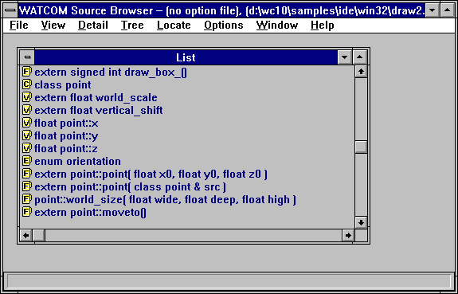
Figure 4. The List window displays all symbols in the current browser database file.
Each symbol has a icon to its left. A letter marking each icon indicates the symbol type in the source code
as follows:
- F
- Function
C
- Class
T
- Typedef
V
- Variable
E
- Enum
There are several ways to display the detail view of symbols. When you reveal the detail view, the file folder icon
changes to an open file folder. To close the detail view dialog, click on the file folder. This changes the icon
back to a closed folder and closes the dialog. To reveal the detail view of a symbol you can perform any of the following
actions:
- The file folder icons are hot spots that display the detail view of the selected symbol. To activate the hot spot,
click once on the symbol name to select it and press ENTER to reveal the detail view.
- Click once on the file folder to reveal the detail view for that symbol.
- Click once on the symbol name to select it and choose Detail from the Detail menu.
- Double click on the symbol name.
The Class Inheritance View
Selecting Inheritance from the View menu displays the inheritance hierarchy of all of the C++ classes in
your program using a tree. This allows you to see the relationships between base classes and derived classes.
In the inheritance hierarchy, each node represents a class.
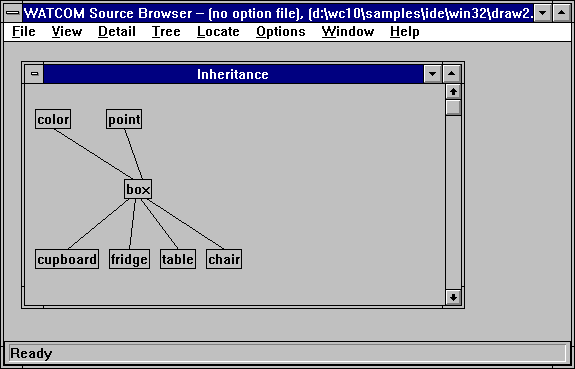
Figure 5. The Inheritance view displays the hierarchy of all C++ classes in your program
(graph view shown).
There are two different tree views you can choose from to display the class hierarchy:
- Graph view
- The graph view displays each class in a box. A box, or node, is connected to another node if one is a derived class
of the other. The root node of the tree is the base class for all nodes in the tree. The tree is initially fully
expanded. See the section entitled Manipulating the Tree Views for more
information on removing and expanding nodes from the tree.
Outline view
- The outline view displays the same information as the graph view but in a different way. The outline view is initially
fully collapsed. That is, only the base classes are displayed. In order to view the derived classes of a node,
you must single click on the node. This expands the node, displaying all its immediate derived classes. See the
section entitled Manipulating the Tree Views for more information on removing
and expanding nodes from the tree.
The Function Call Tree View
Selecting Call from the View menu displays the function call tree for all functions in your program.
This allows you to see all the functions that a given function calls and conversely all functions that call a certain function.
In the call tree, each node represents a function.
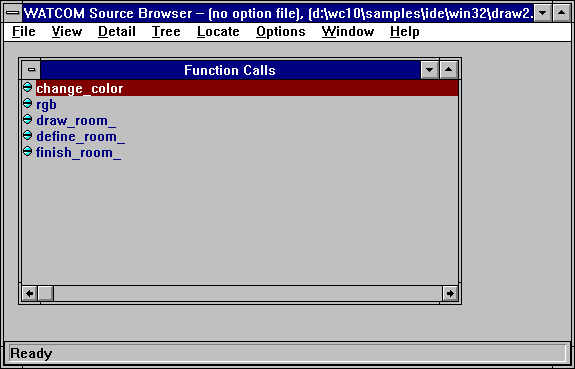
Figure 6. The Call view displays a call tree for all functions in your program (outline
view shown).
There are two different tree views you can choose from to display the function call tree:
- Graph view
- The graph view displays each function in a box. A box, or node, is connected to another node if one function calls the
other. The tree is initially fully expanded. See the section entitled Manipulating the Tree Views
for more information on removing and expanding nodes from the tree.
Outline view
- The outline view displays the same information as the graph view but in a different way. The outline view is initially
fully collapsed. In order to view the functions called by the function specified in the node, you must single click
on the node. This expands the node, displaying all functions it calls. See the section entitled Manipulating the Tree Views
for more information on removing and expanding nodes from the tree.
Manipulating the Tree Views
With both the graph view and the outline view you can change the information displayed in the following ways:
- select the root nodes you want to view
- expand any node in the view
- collapse any node in the view
You expand and collapse nodes in the graph and outline views to hide and reveal descendant and ancestor nodes of the selected
node. There are two ways to expand and collapse nodes:
- choose the desired function from the Tree menu
- click on the node (applies only to the outline view)
In addition to these functions, you can force the graph to be redrawn when a node in the tree view is collapsed.
By default, collapsed nodes will leave a gap in the graph. Redrawing the graph removes these gaps. This feature
is controlled by an option. See the section entitled Configuring the Browser
for more information.
Clicking on the right mouse button when the mouse cursor is in a tree view will automatically display the Tree
menu. This allows you to perform the actions in the Tree menu without actually going to the menu bar.
Selecting Root Nodes
Select Select Root Nodes from the Tree menu to change the root nodes that are displayed. The root
nodes you select appear in the graph or outline view; all other root nodes are hidden.
Choosing Select Root Nodes from the Tree menu opens the Select Root Nodes dialog. This
dialog lists all of the symbols that appear as a root node. Each symbol in the Select Root Nodes dialog has
a check box. When enabled, this check box is marked with an X, indicating that the symbol will appear as a root node
in the display.
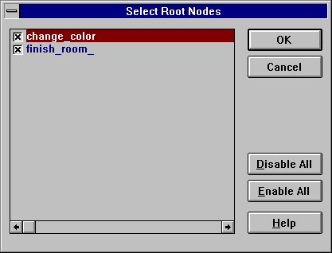
Figure 7. On the Select Root Nodes dialog, choose the symbols you want to appear as root
nodes.
Disabling Root Nodes
- (1)
- Click in the check box of the root node you want to disable. Alternatively, use the up and down arrow keys to
select the root node you wish to disable. Press the space bar to disable the currently selected root node.
The X disappears meaning that the root node is disabled and will not appear in the display.
(2)
- Repeat step one until you have disabled all desired root nodes.
(3)
- Click on OK in the Select Root Nodes dialog.
The Select Root Nodes dialog closes and the display is updated.
To disable all of the root nodes in the Select Root Nodes dialog, click on the Disable All button.
This removes Xs from each box in the Select Root Nodes dialog. Click on OK to close the dialog and update
the display.
- Note:
- This disables the selected root nodes only for the active view window.
Enabling Root Nodes
- (1)
- Click in the check box of the root node you want to enable. Alternatively, use the up and down arrow keys to
select the root node you wish to enable. Press the space bar to enable the currently selected root node.
An X appears in the box indicating that the root node is enabled and will appear in the display.
(2)
- Repeat step one until you have enabled all desired root nodes.
(3)
- Click on OK in the Select Root Nodes dialog.
The Select Root Nodes dialog closes and the display is updated.
To enable all of the root nodes in the Select Root Nodes dialog, click on the Enable All button. An
X appears in each box on the Select Root Nodes dialog. Click on OK to close the dialog and update the
display.
- Note:
- This enables the selected root nodes only for the active view window.
Expanding Nodes
You can expand the display all at once, one level at a time, or one branch at a time. To expand by levels and branches,
you must first select the node you want to expand. Do this by clicking once on the desired node.
- Expand One Level
- Choose Expand One Level from the Tree menu to display all of the immediate children for the selected node.
Expand Branch
- Choose Expand Branch from the Tree menu to display all descendants of the selected node.
Expand All
- Choose Expand All from the Tree menu to fully expand all of the enabled root nodes. Disabled root nodes
do not appear in the display.
Collapsing Nodes
You can collapse the display all at once or one branch at a time. To collapse by branches, you must first select
the node you want to collapse. Do this by clicking once on the desired node.
- Collapse Branch
- Choose Collapse Branch from the Tree menu to hide all descendants of the selected node.
Collapse All
- Choose Collapse All from the Tree menu to collapse all of the nodes and display only the root nodes.
Using the Keyboard
You can expand and collapse the symbols using key sequences. Click once on the symbol name to highlight it and press
one of the following keys:
- +
- Expand the symbol one level
-
- Collapse the symbol one level
*
- Expand all descendants of the selected node. This is the same as choosing Expand Branch from the Tree
menu.
CTRL *
- Expands all of the enabled root nodes. This is the same as choosing Expand All from the Tree menu.
CTRL -
- Collapses all of the symbols and displays only the root nodes. This is the same as choosing Collapse All from
the Tree menu.
Once a global view is displayed, you can view detailed information for a symbol in the global view in several ways:
- Double click on the desired symbol.
- Click once on the desired symbol to select it; then choose Detail from the Detail menu.
- Click once on the desired symbol to select it then press ENTER.
From the list view, you can reveal the detail view if you:
- Click once on the icon to the left of the symbol.
Performing any of these actions reveals a detail view window for the selected symbol. The same information appears
in this window regardless of the method used to access it.
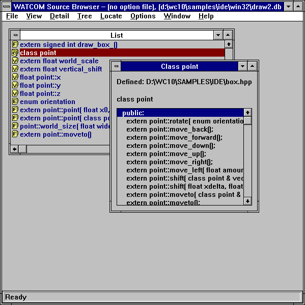
Figure 8. The detail view displays detailed information for the selected symbol.
The detail view window displays the source file where the symbol is defined or declared and it shows you what the
symbol looks like in your source code.
A list box appears in the detail view window when you select a symbol whose type is a function, class, or enum.
The list box contains information specific to the symbol type, as follows.
- Functions
- The list box displays, where applicable, local variables for the function.
Classes
- The list box displays member variables and member functions for the selected class and any inherited classes. The Browser
divides this information into three categories:
Enums
- The list box displays enumerator values for the selected enumerator.
You can view detailed information for symbols in the list box by double-clicking on the symbol. Other symbols in
the header information for the detail view are highlighted. Double-clicking on these symbols also displays a detail
view.
Goto Definition
From a detail view, Goto Definition in the Detail menu allows you to edit the file that contains the symbol's
definition. The editor is positioned on the line and column containing the symbols definition. This allows you
to make edits to your source code while you are browsing. When you are done, save any changes made and exit the editor
to return to the Browser session.
Note that any changes to your source code will make the Browser database out-of-date.
Source References
Selecting Source References from the Detail menu displays all locations in the source code where a symbol
is referenced. This allows you to analyze all uses of a particular symbol.
When modifying a symbol, you can use this feature to locate all occurrences of the symbol in the source code so you
can update them.
- To view the source references for a symbol:
-
(1)
- Position yourself at the detail view of the symbol whose source references you want to view.
(2)
- Choose Source References from the Detail menu.
This opens the Source References window for the selected symbol. This window displays the filename, line
number, and column number of each occurrence of the selected symbol in the source code.
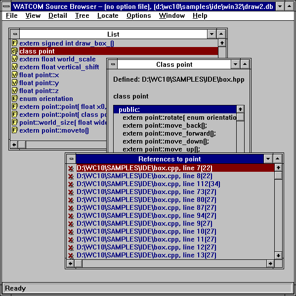
Figure 9. Use the Source References window to view all the occurrences of the selected
symbol in the source code.
Symbol References
Symbol References allows you to view a list of all symbols that use a particular symbol. When modifying
a symbol you can use this feature to locate all symbols using the modified symbol. This allows you to determine if
all referencing symbols need to be updated.
- To view the symbol references for a symbol:
-
(1)
- Position yourself at the detail view of the symbol whose symbol references you want to view.
(2)
- Choose Symbol References from the Detail menu.
This opens the Symbol Referencing window for the selected symbol. This window displays a list of all symbols
that use the selected symbol. The display is the same as the list view of symbols. Each symbol has a icon indicating
its symbol type.
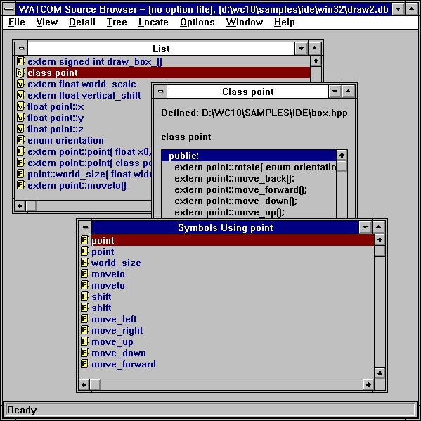
Figure 10. Use the Symbols window to view a list of all symbols that use the selected symbol.
You can perform the same actions in this window as from the List window. Refer to the section entitled
The List View for more information.
From this window you can invoke the editor to make changes to the source code that contains the symbols that reference
a particular symbol. Select the reference you want to edit in one of two ways:
- Double click on the desired reference.
- Click once on the desired reference to select it and press ENTER.
This invokes the editor and positions the cursor at the line that contains the selected reference.
Locating Symbols
When a global view is displayed and your program contains many symbols, it can be difficult to scroll through the global
view to locate a particular symbol. There are two functions that can help you locate a symbol in a global view:
Find
Choose Find from the Locate menu to open the Find dialog. Use this dialog to specify the criteria
to be used to locate a symbol. For example, you can search for a particular symbol or a set of symbols with common
characteristics.
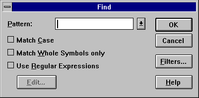
Figure 11. Use the Find dialog to locate one symbol or a set of symbols.
Find Pattern
In the Pattern field of the Find dialog, enter a pattern for the symbol(s) you wish to locate. The
matching behaviour depends on the switches set in this dialog.
- Match Case
- When enabled, the Browser performs a case sensitive compare when attempting to find a match.
Match Whole Symbols Only
- When enabled, the Browser locates symbols that exactly match the specified pattern. This switch only applies when the
Use Regular Expressions switch is disabled.
Use Regular Expressions
- When enabled, the Browser interprets the pattern specified as a regular expression. The Edit button, when pressed,
displays the Regular Expression Options dialog. This dialog allows you to specify the regular expression.
Dropping the combo box of the Pattern field displays a list of previous patterns entered. You can select
a pattern from this list instead of entering a new one.
Find Filters
Clicking on the Filters button on the Find dialog opens the Find Filters dialog. This dialog
allows you to specify the characteristics of the symbol(s) to be located.
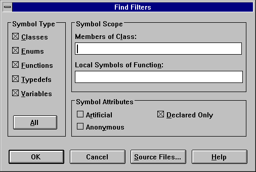
Figure 12. Use the Find Filters dialog to specify characteristics of the symbol(s) you
want to locate.
In the Symbol Type section of the dialog click on the symbol types you want to view. To search for all
symbol types, select the All button.
In the Symbol Scope section, you can specify the scope for locating symbols.
- Member of Class:
- Specify the class that the symbol must be a member of in order to be located.
Local Symbols of Function:
- Specify the function that the symbol must be local to in order to be located.
Find File Filters
The Source Files button, when pressed, displays the Source Files dialog that allows you to specify the files
to be searched when attempting to locate a symbol. This dialog lists all source files that make up the database file.
Each source file in the list has a check box. An X in this box indicates that the source file is searched when
trying to locate a symbol. Click in the check box of the source file you want to disable. This removes the X.
The blank box indicates that the source file will not be searched when trying to locate a symbol. To re-enable
the source file, click in the check box again. This places an X in the box indicating that the source file will be
searched.
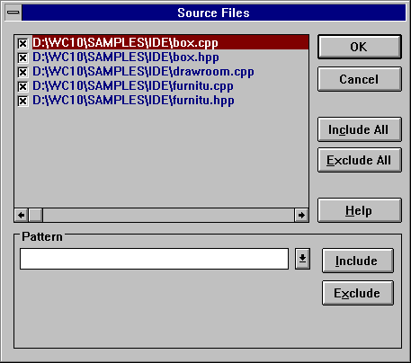
Figure 13. Choose the source files to be searched using the Source Files dialog.
The Pattern section of the dialog, allows you to specify wild card directory specifications for files that
are to be included or excluded in the search. For example, specifying "d:\watcom\h\*.h" and pressing the
Exclude button, will prevent any file in the "d:\watcom\h" directory with extension ".h" from being
searched. To include these files in the search again, specify the same pattern and press the Include button.
Pressing the Set All button includes all files in the search.
Pressing the Clear All button excludes all files in the search. This is useful, for example, if you wish
to only search files in the current directory. Simply press the Clear All button, specify "*.*" in
the Pattern section, and press the Include button.
Once the filter criteria are set, perform the find operation by clicking on the OK button on the Find dialog.
This closes the dialog and performs the search. The Browser examines the symbols in the current global view and
selects the first symbol that matches the search criteria.
To find the next symbol that matches the search criteria, choose Find Next from the Locate menu.
Find Selected
Because the symbols displayed in a global view are often many, only a portion of the display is visible in the window
at any time. When you temporarily scroll away from the selected symbol or node, a quick method of locating that symbol
is to select Find Selected from the Locate menu. This will immediately locate and display the currently
selected symbol in the global view.
Configuring the Browser
There are several options in the Browser that you can configure:
- Regular expression processing for find and query
- Global Symbol Queries
- Enumerator styles for detail views of enumeration constants
- Member filters for detail views of classes
- Auto-arranging of graph views
- Line drawing method for graph views
- Orientation of graph views
- Line styles and colors for inheritance graphs
- Line styles and colors for call graphs
- Selection of text editor
- Automatic saving of options on exit
This section describes each configuration option.
Regular Expressions for Find and Query
Regular Expressions in the Options menu allows you to configure the regular expression used to find a symbol
and specify a query.
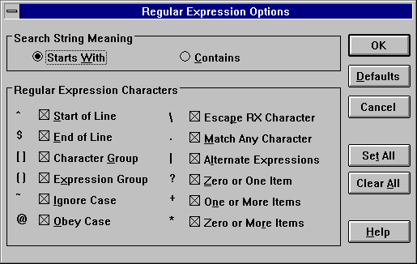
Figure 14. Use the Regular Expressions Options dialog to configure a regular expression
for Find and Query.
Choose Regular Expressions from the Options menu to open the Regular Expressions Options dialog.
In the Search String Meaning section of the dialog you select the anchoring method used to find a match.
- Starts With
- Matches only if the pattern is found at the beginning of the symbol
Contains
- Matches if it occurs anywhere in the symbol
In the Regular Expression Characters section of the dialog you select the characters you want the Browser to interpret
as meta-characters.
Select the desired characters by clicking once in the corresponding check box. An X in the check box indicates
that the character will be interpreted as a meta-character. Unchecked characters are matched as standard keyboard characters.
To de-select a character, click again on its check box.
The other buttons on this dialog are:
- Set All
- Click on Set All to enable all of the characters.
Clear All
- Click on Clear All to disable all of the characters.
Defaults
- Click on Defaults to discard the current settings in this dialog and replace them with the settings configured at the start
of the Browser session.
OK
- Click on OK to close this dialog. This changes the configuration for the current Browser session.
Global Symbol Queries
Choose Query from the Options menu to open the Query dialog. Use this dialog to specify the
criteria to be used to display symbols in a global view.
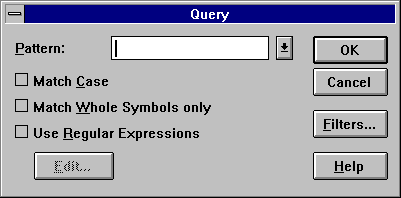
Figure 15. Use the Query dialog to configure global view symbol queries.
Query Pattern
In the Pattern field of the Query dialog, enter a pattern for the symbol(s) you wish to display in the global
views. The matching behaviour depends on the switches set in this dialog.
- Match Case
- When enabled, the Browser performs a case sensitive compare when attempting to find a match.
Match Whole Symbols Only
- When enabled, the Browser includes symbols that exactly match the specified pattern. This switch only applies when the
Use Regular Expressions switch is disabled.
Use Regular Expressions
- When enabled, the Browser interprets the pattern specified as a regular expression. The Edit button is enables
and, when pressed, displays the Regular Expression Options dialog. This dialog allows you to specify the regular
expression.
Dropping the combo box of the Pattern field displays a list of previous patterns entered. You can select
a pattern from this list instead of entering a new one.
Query Filters
Clicking on the Filters button on the Query dialog opens the Query Filters dialog. This dialog
allows you to specify the characteristics of the symbol(s) to be displayed in the global views.
In the Symbol Type section of the dialog click on the symbol types you want to view. To display symbols
of all types, click on the All button.
In the Symbol Scope section, you can specify the scope of the symbols to be displayed.
- Member of Class:
- Specify the class that the symbol must be a member of in order to be displayed.
Local Symbols of Function:
- Specify the function that the symbol must be local to in order to be displayed.
In the Symbol Attributes section, you can specify the attributes of the symbols to be displayed. Selecting
Artificial will cause compiler-generated symbols to be displayed. Selecting Anonymous will cause unnamed
types to be displayed. Unnamed types will be displayed as square brackets enclosing the symbols whose type they define.
Selecting Declared Only will cause only symbols that have been defined to be displayed. For example, a
function prototype for an unreferenced function will not be displayed when Declared Only is selected.
Query File Filters
The Source Files button, when pressed, displays the Source Files dialog that allows you to specify the files
that a symbol must be defined in in order to be displayed. This dialog lists all source files that make up the database
file. Each source file in the list has a check box. An X in this box indicates that all symbols defined in the
source file will be displayed. Click in the check box of the source file you want to disable. This removes the
X. The blank box indicates that any symbols defined in the source file will not be displayed. Alternatively,
use the up and down arrow keys to select the source file you wish to disable. Press the space bar to disable the currently
selected source file. To re-enable the source file, click in the check box again or press the space bar. This
places an X in the box again.
The Pattern section of the dialog, allows you to specify wild card directory specifications for files.
Any symbols defined in these files will be displayed in the global views. For example, specifying d:\watcom\h\*.h
and pressing the Exclude button, will prevent any symbol defined in any file in the d:\watcom\h directory
with extension ".h" from being displayed. To display symbols from these files again, specify the same pattern
and press the Include button.
Pressing the Set All button displays all symbols in all files.
Pressing the Clear All button causes no symbols to be displayed. This is useful, for example, if you
wish to only display symbols defined in files in the current directory. Simply press the Clear All button, specify
*.* in the Pattern section, and press the Include button.
Enumerator Styles
Selecting Enumeration Styles from the Options menu displays the Enumeration Styles dialog.
This dialog allows you to specify the format for displaying enumeration constants in the detail views for enumeration constants.
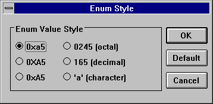
Figure 16. Specify enumerator styles for detail views of enumerator constants using the
Enumeration Styles dialog.
Member Filters for Classes
Member Filters in the Options menu allows you to specify the members you want to appear in the detail view
of a class. For example, you may not want the detail class to contain private members. Alternatively, you may
only wish to see function members and not data members.
- (1)
- Choose Member Filters from the Options menu.
This opens the Member Filters dialog where you specify the information you want to appear in detail views for classes.
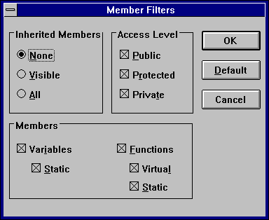
Figure 17. Use the Member Filters dialog to select the information to appear in detail
views for classes.
(2)
- Choose the inheritance level from the Inherited Members section of the dialog.
The options are:
- None
- Do not show inherited members.
Visible
- Show the local members of a class and visible members of inherited classes.
All
- Show all local and inherited members of a class.
(3)
- Click on the check boxes in the Access Level section of the dialog to select the desired access levels.
The options are Public, Protected, and Private. Only members with the selected attributes will appear in the detail
view for a class.
(4)
- Select the desired members in the Members section of the dialog.
Show data members in a class by enabling the variables check box. When the variables check box is
enabled, you may also enable or disable static data members by clicking on the static check box.
Show function members in a class by enabling the functions check box. When the functions check
box is enabled, you may also enable or disable static and virtual function members by clicking on the static and
virtual check boxes.
(5)
- Click on OK to accept the member filter query.
This closes the dialog and returns you to the active window.
- Note:
- The Default button on the Member Filter dialog resets the query to the default settings.
Auto-arranging of Graph Views
When collapsing a graph view, nodes that become hidden are replaced by gaps in the graph. Arrange Graph in
the Tree menu compacts the graph view to remove the spaces left vacant by hidden nodes.
When enabled, Graph Auto-arrange of the Options menu causes the Browser to automatically compact the
graph view each time you perform a collapse operation. To enable the automatic compaction of the graph view after a
collapse operation, select Graph Auto-arrange from the Options menu. A check mark appears beside the
menu item when it is enabled. Select the menu item again to disable it.
Line Drawing Method for Graph Views
Graph Square Lines in the Options menu allows you to select the type of line that connects the nodes in
a graph view. The default is to connect nodes of the graph using diagonal lines. Choosing Graph Square Lines
from the Options menu causes nodes to be connected using square lines (combinations of vertical and horizontal lines).
A check mark beside the menu item indicates this method of drawing lines is enabled. To disable this option,
select it again.
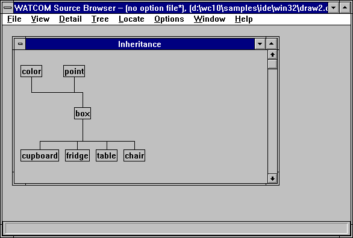
Figure 18. The Graph Square Lines option changes the connecting lines from diagonal to
square.
Changing the Graph Orientation
In the Options menu you can select whether the trees on the graph view grow horizontally or vertically. A
graph view that grows horizontally is one where the root node is at the left and the leaf nodes at the right. A graph
view that grows vertically is one where the root node is at the top and the leaf nodes at the bottom. By default, graphs
grow vertically.
Select Graph Horizontal from the Options menu to change the graph orientation to horizontal. Selecting
this option changes the menu item name to Graph Horizontal in the Options menu. Select this menu item
to change the graph orientation back to vertical.
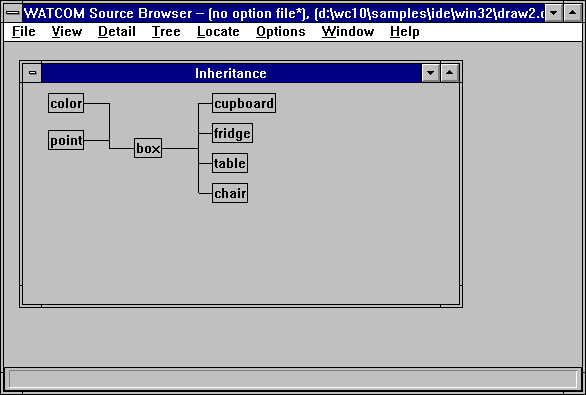
Figure 19. The Graph Horizontal option displays the graph with the root node at the left.
Defining Graph View Legends
The Inheritance Legend and Call Legend menu items in the Options menu allow you to change the colors,
line styles, and node styles used in the graph views. Changing the styles updates all open graph views in the current
session, as well as any new ones you open. Saving the session configuration to an option file saves changes made to
the colors and the lines and node styles.
The Inheritance Legend and Call Legend dialogs are designed differently, but the procedures for changing
the graph styles are identical.
To change the line and node styles for inheritance graphs, choose Inheritance Legend from the Options
menu. The Inheritance Legend dialog appears.
To change the line and node styles for call graphs, choose Call Legend from the Options menu.
The Call Legend dialog appears.
- (1)
- Click once on the line or node style or use the up, down, right and left arrow keys to select the line or node style
you want to change.
A box appears around the selected line.
(2)
- Click on the Modify button.
This opens the Draw Style dialog for the selected line or node style.
(3)
- Click once on the desired line or node style
or
- use the up and down arrow keys to select the desired line or node style.
The sample appearing in the Example field at the top of the dialog now reflects the currently selected line or
node style.
(4)
- Click once on the desired color or use the up and down arrow keys to select the desired color.
The sample appearing in the Example field at the top of the dialog now reflects the currently selected color.
(5)
- Click on OK to accept the new style and color setting.
The Draw Style dialog closes, returning you to the Inheritance Legend or Call Legend dialog.
Select another line or node style to change and repeat this procedure.
(6)
- Click on OK in the Inheritance Legend or Call Legend dialog when you have changed all desired colors
and styles for lines and nodes.
Clicking OK closes the dialog and updates all open inheritance or call graph views with the selected colors and
line and node styles.
Selecting a Text Editor
You can use your own favourite text editor from within the Browser.
- To select your own text editor:
-
(1)
- Choose Set Text Editor from the Options menu.
The Set Text Editor dialog appears. You can enter the name of the text editor in the first field. You must
also indicate whether the text editor is an executable file or a Dynamic Link Library (DLL). If the editor is an executable
file (rather than a DLL), then you can enter an argument line in the second field. The argument line will be supplied
to the editor whenever it is started by the Browser. The argument line can include any of three different macros which
will be filled in by the Browser. The macros are:
- %f
- The name of the file to be edited.
%r
- The row in the file at which to position the cursor. If the editor is invoked from a diagnostic message which contains
a line number then the row value is extracted from the message; otherwise the row value is 1.
%c
- The column in the file at which to position the cursor. If the editor is invoked from a diagnostic message which contains
a column number then the column value is extracted from the message; otherwise the column value is 1.
For example, if the editor argument line that you specified was:
file='%f' row='%r' col='%c'
and you double click on an error message in the Log window that names the file foobar.c with an error at
line 215 and column 31, then the argument line that is passed to your editor is:
file='foobar.c' row='215' col='31'
This flexibility allows you to specify the name of the file to edit and the row and/or column at which to position
the text cursor. If no row or column is available, then the Browser will supply the value of 1 as a default.
(2)
- Select OK when you wish to confirm the selection of a new editor.
or
- Select Cancel when you wish to cancel the selection of a new editor.
or
- Select Default when you wish to restore the default editor selection and then select OK or Cancel.
Automatically Saving Options on Exit
Save Options on Exit in the Options menu instructs the Browser to automatically save the current options
to an options file. To enable the automatic saving of options, select Save Options on Exit from the Options
menu. A check mark beside the menu item indicates that it is enabled. To disable this option, select it again.
See the section entitled Saving Options for more information on saving options to a
file.
Loading Options
Use the Load Options menu to load an option file into your Browser session.
Choose Load Options from the File menu. The Load Options File dialog appears where you
select the option file you want to load for the current Browser session.
Saving Options
There are three ways to save the current options to an option file:
- Save Options
- Save Options As
- Save Options on Exit
An asterisk beside the option file name in the caption bar indicates that changes were made to the options during the
Browser session and should be saved. This section describes each method for saving options to a file.
- Note:
- If you have made option changes during the Browser session and you choose Exit from the File menu without first
saving the options, the Browser prompts you to save the options to a file. Refer to the section entitled Quitting the Browser
for more information.
- Save Options
- Selecting Save Options from the File menu saves the updated options information to the current options file.
To save options in this way, an options file must be specified in the caption bar.
Save Options As
- Save Options As in the File menu opens the Save Options As dialog. Specify the filename of the
option file to which you want to save the current options. Click on OK to close the dialog and save the options.
Save Options on Exit
- Save Options on Exit in the Options menu allows you to specify that the Browser is to automatically save the
current options to an options file, if one exists. When enabled, a check mark appears beside this menu item.
When enabled and an option file exists, the Browser saves the changes without prompting when you close the session.
When enabled and no option file exists, the Browser displays a message box prompting you to save the new options.
Choose No in this box to close the Browser session without saving. Choose Yes in this box to display
a Save As dialog where you specify the option file to which you want to save the new options.
Setting Source Search Paths
You can specify a command line option to the Browser that allows you to specify alternate source file search paths.
This option is useful when a database file is created on a system different from the one that is used to browse the application
source code. The syntax of the command line option is:
path path_spec1;path_spec2;...
Since the database files record explicit paths to source files, it is likely that the path will no longer be valid
once the software is moved to another system.
When the Browser cannot locate the specified file using its explicit path, it will search the paths listed in the
path option.